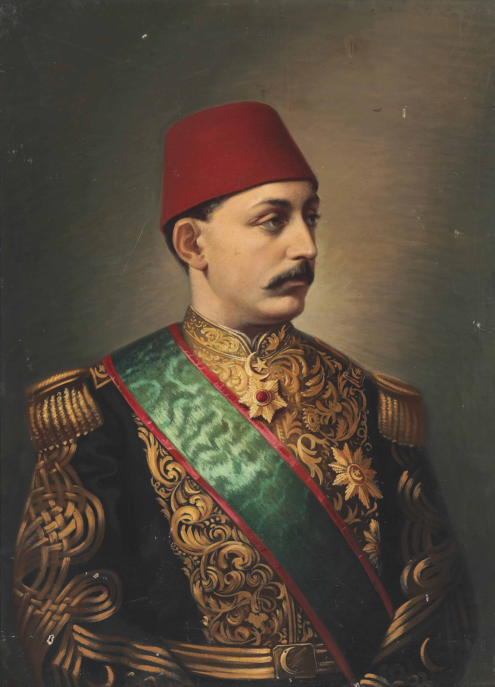

| önceki |  |
sonraki |
V. Murad (Osmanlı Türkçesi: مراد خامس; d. 21 Eylül 1840, İstanbul – ö. 29 Ağustos 1904, İstanbul), 33. Osmanlı padişahı ve 98. İslam halifesidir. Babası Sultan Abdülmecid, annesi Şevkefzâ Valide Sultan'dır. Osmanlı İmparatorluğu tarihinde yalnızca 93 gün hüküm sürerek tahtta en kısa süre kalan padişah olmuştur. İleri derecede Fransızca bilen, klasik Batı müziğinde usta bir piyanist ve bestekâr olan, Jön Türkler ve hürriyetçiler tarafından Meşrutiyet'in en büyük ümidi kabul edilen entelektüel bir şehzadeydi. Ancak 1876 kanlı askeri darbesi, amcası Sultan Abdülaziz'in feci ölümü ve Çerkes Hasan Olayı'nın yarattığı zincirleme dehşet neticesinde ağır bir ruhsal çöküntü yaşamış ve akıl sağlığını yitirdiği gerekçesiyle tahttan indirilmiştir.
Entelektüel Şehzadelik, Sanat ve Avrupa Seyahati
V. Murad, 21 Eylül 1840 tarihinde İstanbul'da Çırağan Sarayı'nda doğdu. Sultan Abdülmecid'in en büyük erkek evladı olarak fevkalade itinalı bir eğitimden geçti. Fransız mürebbiyelerden lisan, felsefe ve Avrupa tarihi dersleri aldı. Batı müziğine karşı olağanüstü bir kabiliyeti vardı; saray mızıkası şefleri Guatelli Paşa ve Lombardi'den piyano ve armoni dersleri alarak çok sayıda vals, polka, marş ve şan parçası besteledi.
1867 yılında amcası Sultan Abdülaziz'in tarihi Avrupa seyahatine veliaht sıfatıyla iştirak etti. Paris ve Londra saraylarında zarafeti, kusursuz Fransızcası ve nezaketiyle büyük bir hayranlık uyandırdı. Geleceğin İngiltere Kralı VII. Edward (Galler Prensi) ile yakın bir şahsi dostluk kurdu. Bu seyahat esnasında Fransız ve İngiliz aydın çevreleriyle temas ederek Masonluğa (Progres Locası) intisap etti.
İstanbul'a döndükten sonra Kurbağalıdere'deki köşkünde devrin muhalif aydınları olan Genç Osmanlılar (Namık Kemal, Ziya Paşa, Şinasi) ve Midhat Paşa ile gizli temaslar yürüttü. Türkiye'ye anayasal bir meşrutiyet rejiminin ancak onun padişahlığıyla geleceğine inanılıyordu.
30 Mayıs 1876 Askeri Darbesi ve Yaşanan İlk Travma
30 Mayıs 1876 gecesi Serasker Hüseyin Avni Paşa, Midhat Paşa ve Harbiye Mektebi Nazırı Süleyman Paşa önderliğindeki cunta, Sultan Abdülaziz'i bir askeri darbeyle tahttan indirdi. Gece yarısı sağanak yağmur altında süngülü askerlerle Dolmabahçe Sarayı Veliaht Dairesi'ne gelen Hüseyin Avni Paşa, Şehzade Murad'ı yatağından alelacele kaldırdı.
Amcasının kendisini katlettirmek için adam gönderdiğini zanneden şehzade, dehşet içinde direnmek istediyse de zorla arabaya bindirildi. Deniz yoluyla fırtınada Sirkeci'ye, oradan da Bâb-ı Meşihat'a götürülerek kılıçların gölgesinde apar topar biat ettirildi. Yaşadığı bu ani ölüm korkusu, narin ve hassas ruh yapısında onarılmaz bir ilk çatlağa yol açtı.
93 Günlük Fırtınalı Saltanat ve Akıl Sağlığının Yıkılışı
Tahta çıkan V. Murad, meşrutiyet ilan etmeyi ve hürriyet fermanı neşretmeyi arzuluyordu. Ancak peş peşe yaşanan kanlı hadiseler genç padişahı tam bir cinnet girdabına sürükledi:
- Sultan Abdülaziz'in Şehadeti (4 Haziran 1876): Tahta çıkışından sadece beş gün sonra, Feriye Sarayı'nda gözaltında tutulan amcası Sultan Abdülaziz'in bilekleri kesilmiş vaziyette kanlar içindeki naaşı bulundu. Bu feci haber üzerine V. Murad: "Beni de amcam gibi kesecekler!" feryatlarıyla kendini havuza atmaya çalıştı, günlerce yemek yemeyi reddetti ve ağır histeri nöbetleri geçirdi.
- Çerkes Hasan Olayı (15 Haziran 1876): Abdülaziz'in kayınbiraderi Kolağası Çerkes Hasan, amcasının intikamını almak maksadıyla Midhat Paşa'nın Beyazıt'taki konağında toplanan vükela meclisini bastı. Tabancalarıyla Serasker Hüseyin Avni Paşa'yı ve Hariciye Nazırı Raşid Paşa'yı kurşun yağmuruna tutarak öldürdü. Bu kanlı baskın, payitahtı ve padişahı dehşetin doruk noktasına ulaştırdı.
- Tıbbi Rapor ve Dr. Leidesdorf: Padişahın akli dengesini tamamen yitirmesi üzerine Viyana'dan devrin en ünlü psikiyatristi Dr. Leidesdorf davet edildi. Yapılan muayene neticesinde padişahın maruz kaldığı ağır şok sebebiyle şifa bulmasının imkânsız olduğu ve devlet idare edemeyeceği rapor edildi.
Tahttan İndirilişi ve II. Abdülhamid'in Cülusu (31 Ağustos 1876)
Hükümet erkanı ve Midhat Paşa, Balkanlar'da Sırp-Karadağ isyanlarının sürdüğü ve Rus harbi tehlikesinin yaklaştığı bu buhranlı dönemde devletsiz kalınamayacağını görerek Şeyhülislam Hayrullah Efendi'den fetva aldılar. 31 Ağustos 1876 günü V. Murad 93 günlük hükümdarlığın ardından tahttan indirildi ve yerine Meşrutiyet'i ilan etme sözü veren kardeşi II. Abdülhamid tahta çıkarıldı.
28 Yıllık Çırağan Sarayı Hayatı ve Kurtarma Teşebbüsleri
V. Murad, annesi, eşleri ve evlatlarıyla birlikte Boğaziçi'ndeki Çırağan Sarayı'na nakledildi. Burada 28 yıl boyunca sıkı bir gözetim altında yaşadı. Sarayda geçen sakin yıllarda ruh sağlığı önemli ölçüde düzeldi; vaktini piyano çalarak, beste yaparak, yabancı dergileri okuyarak ve torunlarını eğiterek geçirdi.
Ancak onun Çırağan'da bulunması, II. Abdülhamid yönetimine karşı muhalif hareketlerin daimi odağı oldu:
- Ali Suavi ve Çırağan Baskını (20 Mayıs 1878): "Sarıklı İhtilalci" olarak bilinen gazeteci Ali Suavi, Balkan göçmenlerinden topladığı silahlı birkaç yüz kişiyle güpegündüz Çırağan Sarayı'nı bastı. Sarayın harem dairesine kadar girerek V. Murad'ı kolundan tutup dışarı çıkarmak istedi. Ancak Beşiktaş Muhafızı Yedi Sekiz Hasan Paşa'nın kafasına vurduğu meşhur meşe sopasıyla Ali Suavi olay yerinde öldürüldü ve kanlı darbe teşebbüsü bastırıldı.
- Kleanti Skalyeri - Aziz Bey Komitesi (1878): V. Murad'ı Avrupa'ya kaçırmak veya tekrar tahta çıkarmak amacıyla gizli bir teşkilat kurulduysa da planlar vaktinde haber alınarak engellendi.
Vefatı ve Şahsiyeti
V. Murad, 29 Ağustos 1904 tarihinde Çırağan Sarayı'nda müzmin şeker hastalığı sebebiyle 63 yaşında vefat etti. Sessiz bir cenaze merasimiyle kaldırılan naaşı, Yeni Cami Turhan Valide Türbesi bitişiğindeki Havatin Türbesi'ne defnedildi.
Tarihçiler onu nazik, son derece yetenekli, Batı kültürüne ve güzel sanatlara derin vukuflu bir aydın; fakat Osmanlı İmparatorluğu'nun en kanlı ve acımasız siyasi kriz döneminin kurbanı olmuş talihsiz bir şehzade olarak yâd ederler.
Ailesi
- Eşleri:
- Elruve Mevhibe Başkadın (1835 - 1936)
- Reftarıdil Kadın (1838 - 1936)
- Şayan Kadın (1853 - 1945)
- Meyliservet Kadın (1859 - 1891)
- Resan Hanım (1860 - 1910)
- Erkek Çocukları:
- Şehzade Mehmed Selahaddin (1861 - 1915)
- Şehzade Süleyman (1866 - 1866)
- Şehzade Seyfeddin (1872 - 1872)
- Kız Çocukları:
- Hatice Sultan (1870 - 1938)
- Fehime Sultan (1875 - 1929)
- Fatma Sultan (1879 - 1932)
- Aliye Sultan (1880 - 1903)
V. Murad hakkında daha fazla bilgi için buraya tıklayın.